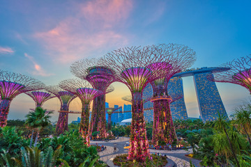
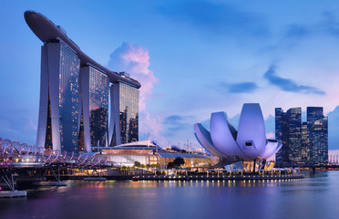
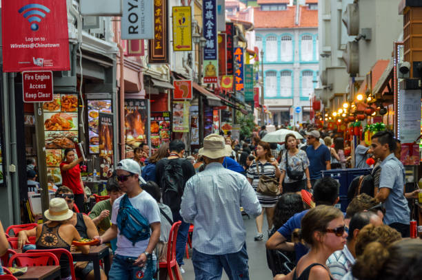
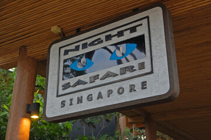

About Singapore
Singapore, officially the Republic of Singapore, is a sovereign island city-state in maritime Southeast Asia. Despite its small size, Singapore has emerged as a global financial center and a multicultural metropolis that seamlessly blends tradition with innovation.
Known for its spotless streets, efficient public transportation, lush green spaces, and extraordinary food scene, Singapore offers visitors a unique experience that combines the best of Eastern and Western cultures in a safe, clean, and ultramodern environment.
Top Places to Visit in Singapore
-

Gardens by the Bay
This award-winning horticultural destination spans 101 hectares of reclaimed land in central Singapore. The garden features massive Supertree structures, two cooled conservatories—the Flower Dome and the Cloud Forest—and various themed gardens.
Highlight: Don't miss the evening light and sound show at the Supertree Grove, a magical display that brings the artificial trees to life.
-

Marina Bay Sands
This iconic integrated resort features a luxury hotel, high-end shopping mall, casino, convention center, and the famous SkyPark with its infinity pool offering breathtaking panoramic views of the Singapore skyline.
Tip: While the infinity pool is reserved for hotel guests, visitors can purchase tickets to the SkyPark Observation Deck for spectacular views.
-
Sentosa Island
Singapore's premier island resort getaway, Sentosa offers a variety of attractions including Universal Studios Singapore, S.E.A. Aquarium, Adventure Cove Waterpark, pristine beaches, golf courses, and luxury resorts.
Family Favorite: Universal Studios Singapore features movie-themed rides and attractions for all ages, while the S.E.A. Aquarium houses more than 100,000 marine animals.
-

Chinatown
Singapore's historic Chinatown is a bustling mix of old and new, with traditional shops and markets alongside trendy stores, boutiques, and cool cafés. Visit the Buddha Tooth Relic Temple, Sri Mariamman Temple, and sample authentic Chinese cuisine at the food streets.
Cultural Experience: Explore the narrow streets filled with shophouses, sample traditional Chinese pastries, and pick up souvenirs at the street markets.
-

Singapore Zoo & Night Safari
Widely recognized as one of the world's best zoos, Singapore Zoo pioneered the 'open concept' zoo with spacious, landscaped enclosures and hidden barriers. The adjacent Night Safari, the world's first nocturnal wildlife park, offers a unique opportunity to observe nocturnal animals in their natural habitat.
Must-See: Breakfast with orangutans at Singapore Zoo and the Creatures of the Night show at Night Safari are unforgettable experiences.
Singapore's Culinary Delights
Singapore is a food lover's paradise, known for its diverse culinary scene that reflects its multicultural heritage. From humble hawker centers to Michelin-starred restaurants, the city offers an incredible array of dining experiences.
Must-Try Local Dishes
- Hainanese Chicken Rice: Singapore's national dish of poached chicken with aromatic rice
- Chili Crab: Stir-fried crab in a sweet and savory tomato and chili sauce
- Laksa: Spicy coconut milk-based noodle soup
- Satay: Grilled meat skewers served with peanut sauce
- Kaya Toast: Traditional breakfast of toast with coconut jam and soft-boiled eggs
Where to Eat
- Hawker Centers: Maxwell Food Centre, Lau Pa Sat, Chinatown Complex
- Little India: For authentic Indian cuisine
- Arab Street: Middle Eastern and Malay food
- Orchard Road: High-end dining and international cuisine
- Clarke Quay: Riverside dining and entertainment
Singapore Travel Tips
Transportation
Singapore's MRT (Mass Rapid Transit) system is efficient, affordable, and connects to most major attractions. Purchase an EZ-Link card for convenient travel on public transport.
Weather Preparedness
Pack light clothing, a portable umbrella for sudden showers, and be prepared for high humidity. Most indoor venues are air-conditioned and can be quite cool.
Local Laws
Singapore has strict laws on littering, eating/drinking on public transit, and jaywalking. Severe penalties apply for drug offenses. Respect local regulations to avoid fines.
Money Matters
Credit cards are widely accepted, but carry some cash for hawker centers and small shops. Tipping is not customary in Singapore as most establishments include service charges.
Singapore for Every Traveler
Family-Friendly
Singapore is perfect for families with attractions like Universal Studios, Singapore Zoo, and science centers. Safe streets and efficient transport make traveling with children easy.
Luxury Seekers
Indulge in world-class shopping on Orchard Road, stay in opulent hotels, dine at celebrity chef restaurants, and experience exclusive rooftop bars and luxury spas.
Nature Lovers
Explore Singapore's green side at the Botanic Gardens, MacRitchie Reservoir TreeTop Walk, Southern Ridges, and Pulau Ubin for a glimpse of old Singapore.
Traveler Stories
"Singapore exceeded all our expectations. The cleanliness, efficiency, and safety made traveling with our young children so easy. Gardens by the Bay was magical, and the food at the hawker centers was incredible!"
"As a solo female traveler, I felt completely safe exploring Singapore day and night. The efficient public transport made it easy to see all the attractions, and the diverse neighborhoods gave me a wonderful cultural experience."
"Our business trip turned into an amazing culinary adventure! From breakfast kaya toast to late-night chili crab, Singapore's food scene is unmatched. Don't miss the local coffee shops for an authentic experience."
Official Tourism Websites
For more detailed information and official updates, visit the official tourism websites: